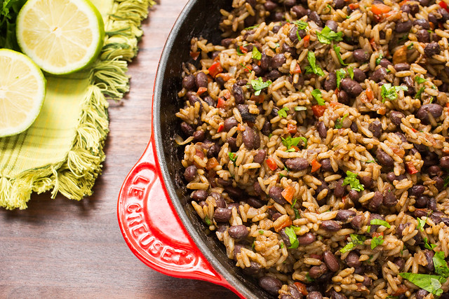

Rice n Beans

Description
Rice n Beans is a traditional
Costa Rican dish, originating
from the countries tropical
Caribean coast. Not to be confused
with the worldwide dish of "Rice and
Beans", this dish contains an elaborate
array of vegetables and rich sauces unique
to Caribean cullenary tradition.
Ingredients
- Extra Virgin Olive Oil
- Red Bell Pepper
- Yellow Onion
- Garlic
- Black Beans
- Salso Lizano
- White Rice
- Cilantro
Steps
- Heat oil in a large skillet over medium-high heat
- Saute chopped bell pepper and onions for 6 - 8 minutes
- Add minced garlic and cook for 1 minute
- Add black beans and Salsa Lizano
- Simmer for 5 minutes
- Stir in cooked rice and cook for 3 - 5 minutes
Return to Home